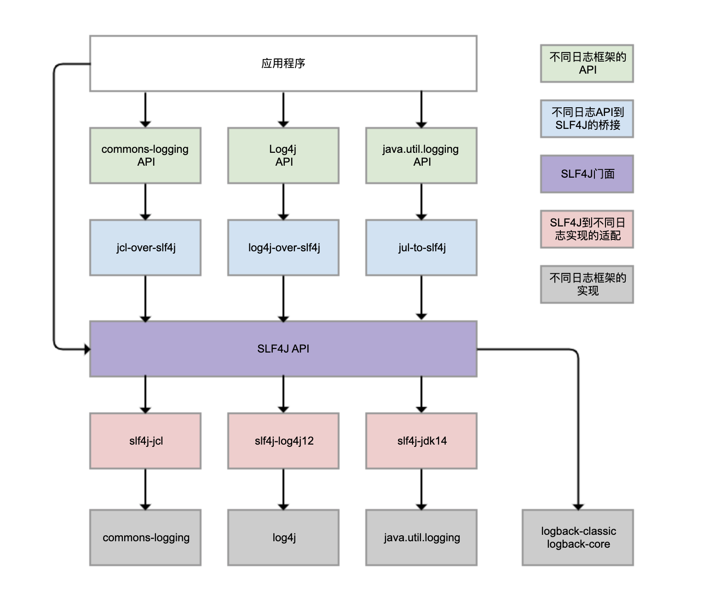
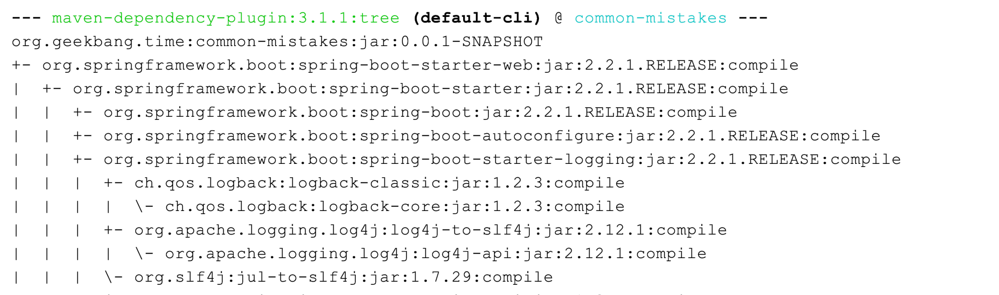
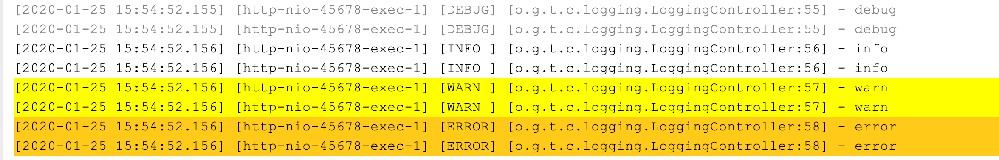
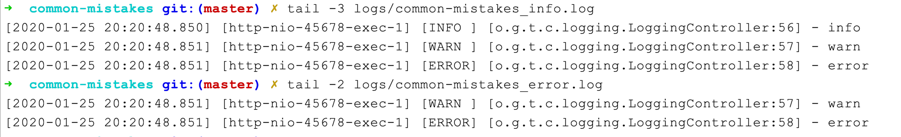
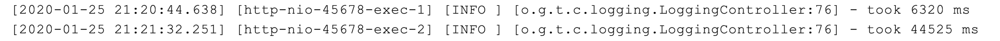
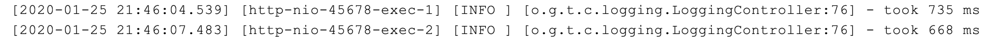
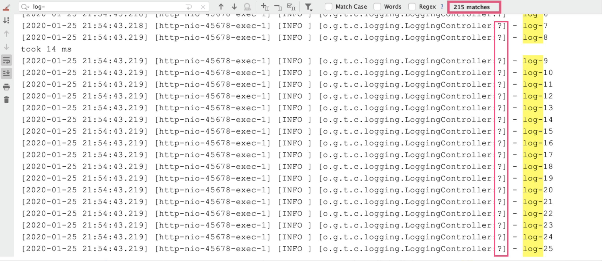
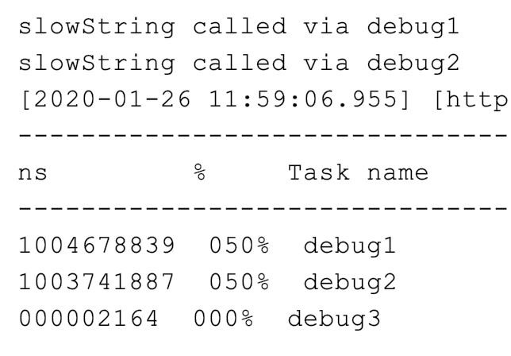
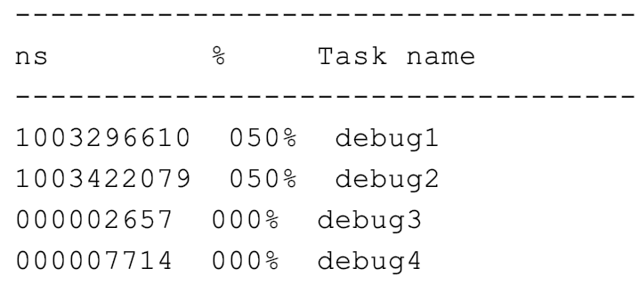

- 00 开篇词 业务代码真的会有这么多坑？.md.html
- 01 使用了并发工具类库，线程安全就高枕无忧了吗？.md.html
- 02 代码加锁：不要让“锁”事成为烦心事.md.html
- 03 线程池：业务代码最常用也最容易犯错的组件.md.html
- 04 连接池：别让连接池帮了倒忙.md.html
- 05 HTTP调用：你考虑到超时、重试、并发了吗？.md.html
- 06 2成的业务代码的Spring声明式事务，可能都没处理正确.md.html
- 07 数据库索引：索引并不是万能药.md.html
- 08 判等问题：程序里如何确定你就是你？.md.html
- 09 数值计算：注意精度、舍入和溢出问题.md.html
- 10 集合类：坑满地的List列表操作.md.html
- 11 空值处理：分不清楚的null和恼人的空指针.md.html
- 12 异常处理：别让自己在出问题的时候变为瞎子.md.html
- 13 日志：日志记录真没你想象的那么简单.md.html
- 14 文件IO：实现高效正确的文件读写并非易事.md.html
- 15 序列化：一来一回你还是原来的你吗？.md.html
- 16 用好Java 8的日期时间类，少踩一些“老三样”的坑.md.html
- 17 别以为“自动挡”就不可能出现OOM.md.html
- 18 当反射、注解和泛型遇到OOP时，会有哪些坑？.md.html
- 19 Spring框架：IoC和AOP是扩展的核心.md.html
- 20 Spring框架：框架帮我们做了很多工作也带来了复杂度.md.html
- 21 代码重复：搞定代码重复的三个绝招.md.html
- 22 接口设计：系统间对话的语言，一定要统一.md.html
- 23 缓存设计：缓存可以锦上添花也可以落井下石.md.html
- 24 业务代码写完，就意味着生产就绪了？.md.html
- 25 异步处理好用，但非常容易用错.md.html
- 26 数据存储：NoSQL与RDBMS如何取长补短、相辅相成？.md.html
- 27 数据源头：任何客户端的东西都不可信任.md.html
- 28 安全兜底：涉及钱时，必须考虑防刷、限量和防重.md.html
- 29 数据和代码：数据就是数据，代码就是代码.md.html
- 30 如何正确保存和传输敏感数据？.md.html
- 31 加餐1：带你吃透课程中Java 8的那些重要知识点（一）.md.html
- 32 加餐2：带你吃透课程中Java 8的那些重要知识点（二）.md.html
- 33 加餐3：定位应用问题，排错套路很重要.md.html
- 34 加餐4：分析定位Java问题，一定要用好这些工具（一）.md.html
- 35 加餐5：分析定位Java问题，一定要用好这些工具（二）.md.html
- 36 加餐6：这15年来，我是如何在工作中学习技术和英语的？.md.html
- 37 加餐7：程序员成长28计.md.html
- 38 加餐8：Java程序从虚拟机迁移到Kubernetes的一些坑.md.html
- 答疑篇：代码篇思考题集锦（一）.md.html
- 答疑篇：代码篇思考题集锦（三）.md.html
- 答疑篇：代码篇思考题集锦（二）.md.html
- 答疑篇：加餐篇思考题答案合集.md.html
- 答疑篇：安全篇思考题答案合集.md.html
- 答疑篇：设计篇思考题答案合集.md.html
- 结束语 写代码时，如何才能尽量避免踩坑？.md.html
13 日志：日志记录真没你想象的那么简单
你好，我是朱晔。今天，我和你分享的是，记录日志可能会踩的坑。
一些同学可能要说了，记录日志还不简单，无非是几个常用的 API 方法，比如 debug、info、warn、error；但我就见过不少坑都是记录日志引起的，容易出错主要在于三个方面：
日志框架众多，不同的类库可能会使用不同的日志框架，如何兼容是一个问题。
配置复杂且容易出错。日志配置文件通常很复杂，因此有些开发同学会从其他项目或者网络上复制一份配置文件，但却不知道如何修改，甚至是胡乱修改，造成很多问题。比如，重复记录日志的问题、同步日志的性能问题、异步记录的错误配置问题。
日志记录本身就有些误区，比如没考虑到日志内容获取的代价、胡乱使用日志级别等。
Logback、Log4j、Log4j2、commons-logging、JDK 自带的 java.util.logging 等，都是 Java 体系的日志框架，确实非常多。而不同的类库，还可能选择使用不同的日志框架。这样一来，日志的统一管理就变得非常困难。为了解决这个问题，就有了 SLF4J（Simple Logging Facade For Java），如下图所示：

SLF4J 实现了三种功能：
一是提供了统一的日志门面 API，即图中紫色部分，实现了中立的日志记录 API。
二是桥接功能，即图中蓝色部分，用来把各种日志框架的 API（图中绿色部分）桥接到 SLF4J API。这样一来，即便你的程序中使用了各种日志 API 记录日志，最终都可以桥接到 SLF4J 门面 API。
三是适配功能，即图中红色部分，可以实现 SLF4J API 和实际日志框架（图中灰色部分）的绑定。SLF4J 只是日志标准，我们还是需要一个实际的日志框架。日志框架本身没有实现 SLF4J API，所以需要有一个前置转换。Logback 就是按照 SLF4J API 标准实现的，因此不需要绑定模块做转换。
需要理清楚的是，虽然我们可以使用 log4j-over-slf4j 来实现 Log4j 桥接到 SLF4J，也可以使用 slf4j-log4j12 实现 SLF4J 适配到 Log4j，也把它们画到了一列，但是它不能同时使用它们，否则就会产生死循环。jcl 和 jul 也是同样的道理。
虽然图中有 4 个灰色的日志实现框架，但我看到的业务系统使用最广泛的是 Logback 和 Log4j，它们是同一人开发的。Logback 可以认为是 Log4j 的改进版本，我更推荐使用。所以，关于日志框架配置的案例，我都会围绕 Logback 展开。
Spring Boot 是目前最流行的 Java 框架，它的日志框架也用的是 Logback。那，为什么我们没有手动引入 Logback 的包，就可以直接使用 Logback 了呢？
查看 Spring Boot 的 Maven 依赖树，可以发现 spring-boot-starter 模块依赖了 spring-boot-starter-logging 模块，而 spring-boot-starter-logging 模块又帮我们自动引入了 logback-classic（包含了 SLF4J 和 Logback 日志框架）和 SLF4J 的一些适配器。其中，log4j-to-slf4j 用于实现 Log4j2 API 到 SLF4J 的桥接，jul-to-slf4j 则是实现 java.util.logging API 到 SLF4J 的桥接：

接下来，我就用几个实际的案例和你说说日志配置和记录这两大问题，顺便以 Logback 为例复习一下常见的日志配置。
为什么我的日志会重复记录？
日志重复记录在业务上非常常见，不但给查看日志和统计工作带来不必要的麻烦，还会增加磁盘和日志收集系统的负担。接下来，我和你分享两个重复记录的案例，同时帮助你梳理 Logback 配置的基本结构。
第一个案例是，logger 配置继承关系导致日志重复记录。首先，定义一个方法实现 debug、info、warn 和 error 四种日志的记录：
@Log4j2
@RequestMapping("logging")
@RestController
public class LoggingController {
@GetMapping("log")
public void log() {
log.debug("debug");
log.info("info");
log.warn("warn");
log.error("error");
}
}
然后，使用下面的 Logback 配置：
第 11 和 12 行设置了全局的日志级别为 INFO，日志输出使用 CONSOLE Appender。
第 3 到 7 行，首先将 CONSOLE Appender 定义为 ConsoleAppender，也就是把日志输出到控制台（System.out/System.err）；然后通过 PatternLayout 定义了日志的输出格式。关于格式化字符串的各种使用方式，你可以进一步查阅官方文档。
第 8 到 10 行实现了一个 Logger 配置，将应用包的日志级别设置为 DEBUG、日志输出同样使用 CONSOLE Appender。
<?xml version="1.0" encoding="UTF-8" ?>
<configuration>
<appender name="CONSOLE" class="ch.qos.logback.core.ConsoleAppender">
<layout class="ch.qos.logback.classic.PatternLayout">
<pattern>[%d{yyyy-MM-dd HH:mm:ss.SSS}] [%thread] [%-5level] [%logger{40}:%line] - %msg%n</pattern>
</layout>
</appender>
<logger name="org.geekbang.time.commonmistakes.logging" level="DEBUG">
<appender-ref ref="CONSOLE"/>
</logger>
<root level="INFO">
<appender-ref ref="CONSOLE"/>
</root>
</configuration>
这段配置看起来没啥问题，但执行方法后出现了日志重复记录的问题：

从配置文件的第 9 和 12 行可以看到，CONSOLE 这个 Appender 同时挂载到了两个 Logger 上，一个是我们定义的
后来我了解到，这个同学如此配置的初衷是实现自定义的 logger 配置，让应用内的日志暂时开启 DEBUG 级别的日志记录。其实，他完全不需要重复挂载 Appender，去掉
<logger name="org.geekbang.time.commonmistakes.logging" level="DEBUG"/>
如果自定义的
<?xml version="1.0" encoding="UTF-8" ?>
<configuration>
<appender name="FILE" class="ch.qos.logback.core.FileAppender">
<file>app.log</file>
<encoder class="ch.qos.logback.classic.encoder.PatternLayoutEncoder">
<pattern>[%d{yyyy-MM-dd HH:mm:ss.SSS}] [%thread] [%-5level] [%logger{40}:%line] - %msg%n</pattern>
</encoder>
</appender>
<appender name="CONSOLE" class="ch.qos.logback.core.ConsoleAppender">
<layout class="ch.qos.logback.classic.PatternLayout">
<pattern>[%d{yyyy-MM-dd HH:mm:ss.SSS}] [%thread] [%-5level] [%logger{40}:%line] - %msg%n</pattern>
</layout>
</appender>
<logger name="org.geekbang.time.commonmistakes.logging" level="DEBUG" additivity="false">
<appender-ref ref="FILE"/>
</logger>
<root level="INFO">
<appender-ref ref="CONSOLE" />
</root>
</configuration>
第二个案例是，错误配置 LevelFilter 造成日志重复记录。
一般互联网公司都会使用 ELK 三件套来统一收集日志，有一次我们发现 Kibana 上展示的日志有部分重复，一直怀疑是 Logstash 配置错误，但最后发现还是 Logback 的配置错误引起的。
这个项目的日志是这样配置的：在记录日志到控制台的同时，把日志记录按照不同的级别记录到两个文件中：
<?xml version="1.0" encoding="UTF-8" ?>
<configuration>
<property name="logDir" value="./logs" />
<property name="app.name" value="common-mistakes" />
<appender name="CONSOLE" class="ch.qos.logback.core.ConsoleAppender">
<layout class="ch.qos.logback.classic.PatternLayout">
<pattern>[%d{yyyy-MM-dd HH:mm:ss.SSS}] [%thread] [%-5level] [%logger{40}:%line] - %msg%n</pattern>
</layout>
</appender>
<appender name="INFO_FILE" class="ch.qos.logback.core.FileAppender">
<File>${logDir}/${app.name}_info.log</File>
<filter class="ch.qos.logback.classic.filter.LevelFilter">
<level>INFO</level>
</filter>
<encoder class="ch.qos.logback.classic.encoder.PatternLayoutEncoder">
<pattern>[%d{yyyy-MM-dd HH:mm:ss.SSS}] [%thread] [%-5level] [%logger{40}:%line] - %msg%n</pattern>
<charset>UTF-8</charset>
</encoder>
</appender>
<appender name="ERROR_FILE" class="ch.qos.logback.core.FileAppender">
<File>${logDir}/${app.name}_error.log</File>
<filter class="ch.qos.logback.classic.filter.ThresholdFilter">
<level>WARN</level>
</filter>
<encoder class="ch.qos.logback.classic.encoder.PatternLayoutEncoder">
<pattern>[%d{yyyy-MM-dd HH:mm:ss.SSS}] [%thread] [%-5level] [%logger{40}:%line] - %msg%n</pattern>
<charset>UTF-8</charset>
</encoder>
</appender>
<root level="INFO">
<appender-ref ref="CONSOLE" />
<appender-ref ref="INFO_FILE"/>
<appender-ref ref="ERROR_FILE"/>
</root>
</configuration>
这个配置文件比较长，我带着你一段一段地看：
第 31 到 35 行定义的 root 引用了三个 Appender。
第 5 到 9 行是第一个 ConsoleAppender，用于把所有日志输出到控制台。
第 10 到 19 行定义了一个 FileAppender，用于记录文件日志，并定义了文件名、记录日志的格式和编码等信息。最关键的是，第 12 到 14 行定义的 LevelFilter 过滤日志，将过滤级别设置为 INFO，目的是希望 _info.log 文件中可以记录 INFO 级别的日志。
第 20 到 30 行定义了一个类似的 FileAppender，并使用 ThresholdFilter 来过滤日志，过滤级别设置为 WARN，目的是把 WARN 以上级别的日志记录到另一个 _error.log 文件中。
运行一下测试程序：

可以看到，_info.log 中包含了 INFO、WARN 和 ERROR 三个级别的日志，不符合我们的预期；error.log 包含了 WARN 和 ERROR 两个级别的日志。因此，造成了日志的重复收集。
你可能会问，这么明显的日志重复为什么没有及时发现？一些公司使用自动化的 ELK 方案收集日志，日志会同时输出到控制台和文件，开发人员在本机测试时不太会关心文件中记录的日志，而在测试和生产环境又因为开发人员没有服务器访问权限，所以原始日志文件中的重复问题并不容易发现。
为了分析日志重复的原因，我们来复习一下 ThresholdFilter 和 LevelFilter 的配置方式。
分析 ThresholdFilter 的源码发现，当日志级别大于等于配置的级别时返回 NEUTRAL，继续调用过滤器链上的下一个过滤器；否则，返回 DENY 直接拒绝记录日志：
public class ThresholdFilter extends Filter<ILoggingEvent> {
public FilterReply decide(ILoggingEvent event) {
if (!isStarted()) {
return FilterReply.NEUTRAL;
}
if (event.getLevel().isGreaterOrEqual(level)) {
return FilterReply.NEUTRAL;
} else {
return FilterReply.DENY;
}
}
}
在这个案例中，把 ThresholdFilter 设置为 WARN，可以记录 WARN 和 ERROR 级别的日志。
LevelFilter 用来比较日志级别，然后进行相应处理：如果匹配就调用 onMatch 定义的处理方式，默认是交给下一个过滤器处理（AbstractMatcherFilter 基类中定义的默认值）；否则，调用 onMismatch 定义的处理方式，默认也是交给下一个过滤器处理。
public class LevelFilter extends AbstractMatcherFilter<ILoggingEvent> {
public FilterReply decide(ILoggingEvent event) {
if (!isStarted()) {
return FilterReply.NEUTRAL;
}
if (event.getLevel().equals(level)) {
return onMatch;
} else {
return onMismatch;
}
}
}
public abstract class AbstractMatcherFilter<E> extends Filter<E> {
protected FilterReply onMatch = FilterReply.NEUTRAL;
protected FilterReply onMismatch = FilterReply.NEUTRAL;
}
和 ThresholdFilter 不同的是，LevelFilter 仅仅配置 level 是无法真正起作用的。由于没有配置 onMatch 和 onMismatch 属性，所以相当于这个过滤器是无用的，导致 INFO 以上级别的日志都记录了。
定位到问题后，修改方式就很明显了：配置 LevelFilter 的 onMatch 属性为 ACCEPT，表示接收 INFO 级别的日志；配置 onMismatch 属性为 DENY，表示除了 INFO 级别都不记录：
<appender name="INFO_FILE" class="ch.qos.logback.core.FileAppender">
<File>${logDir}/${app.name}_info.log</File>
<filter class="ch.qos.logback.classic.filter.LevelFilter">
<level>INFO</level>
<onMatch>ACCEPT</onMatch>
<onMismatch>DENY</onMismatch>
</filter>
...
</appender>
这样修改后，_info.log 文件中只会有 INFO 级别的日志，不会出现日志重复的问题了。
使用异步日志改善性能的坑
掌握了把日志输出到文件中的方法后，我们接下来面临的问题是，如何避免日志记录成为应用的性能瓶颈。这可以帮助我们解决，磁盘（比如机械磁盘）IO 性能较差、日志量又很大的情况下，如何记录日志的问题。
我们先来测试一下，记录日志的性能问题，定义如下的日志配置，一共有两个 Appender：
FILE 是一个 FileAppender，用于记录所有的日志；
CONSOLE 是一个 ConsoleAppender，用于记录带有 time 标记的日志。
<?xml version="1.0" encoding="UTF-8" ?>
<configuration>
<appender name="FILE" class="ch.qos.logback.core.FileAppender">
<file>app.log</file>
<encoder class="ch.qos.logback.classic.encoder.PatternLayoutEncoder">
<pattern>[%d{yyyy-MM-dd HH:mm:ss.SSS}] [%thread] [%-5level] [%logger{40}:%line] - %msg%n</pattern>
</encoder>
</appender>
<appender name="CONSOLE" class="ch.qos.logback.core.ConsoleAppender">
<layout class="ch.qos.logback.classic.PatternLayout">
<pattern>[%d{yyyy-MM-dd HH:mm:ss.SSS}] [%thread] [%-5level] [%logger{40}:%line] - %msg%n</pattern>
</layout>
<filter class="ch.qos.logback.core.filter.EvaluatorFilter">
<evaluator class="ch.qos.logback.classic.boolex.OnMarkerEvaluator">
<marker>time</marker>
</evaluator>
<onMismatch>DENY</onMismatch>
<onMatch>ACCEPT</onMatch>
</filter>
</appender>
<root level="INFO">
<appender-ref ref="FILE"/>
<appender-ref ref="CONSOLE"/>
</root>
</configuration>
不知道你有没有注意到，这段代码中有个 EvaluatorFilter（求值过滤器），用于判断日志是否符合某个条件。
在后续的测试代码中，我们会把大量日志输出到文件中，日志文件会非常大，如果性能测试结果也混在其中的话，就很难找到那条日志。所以，这里我们使用 EvaluatorFilter 对日志按照标记进行过滤，并将过滤出的日志单独输出到控制台上。在这个案例中，我们给输出测试结果的那条日志上做了 time 标记。
配合使用标记和 EvaluatorFilter，实现日志的按标签过滤，是一个不错的小技巧。
如下测试代码中，实现了记录指定次数的大日志，每条日志包含 1MB 字节的模拟数据，最后记录一条以 time 为标记的方法执行耗时日志：
@GetMapping("performance")
public void performance(@RequestParam(name = "count", defaultValue = "1000") int count) {
long begin = System.currentTimeMillis();
String payload = IntStream.rangeClosed(1, 1000000)
.mapToObj(__ -> "a")
.collect(Collectors.joining("")) + UUID.randomUUID().toString();
IntStream.rangeClosed(1, count).forEach(i -> log.info("{} {}", i, payload));
Marker timeMarker = MarkerFactory.getMarker("time");
log.info(timeMarker, "took {} ms", System.currentTimeMillis() - begin);
}
执行程序后可以看到，记录 1000 次日志和 10000 次日志的调用耗时，分别是 6.3 秒和 44.5 秒：

对于只记录文件日志的代码了来说，这个耗时挺长的。为了分析其中原因，我们需要分析下 FileAppender 的源码。
FileAppender 继承自 OutputStreamAppender，查看 OutputStreamAppender 源码的第 30 到 33 行发现，在追加日志的时候，是直接把日志写入 OutputStream 中，属于同步记录日志：
public class OutputStreamAppender<E> extends UnsynchronizedAppenderBase<E> {
private OutputStream outputStream;
boolean immediateFlush = true;
@Override
protected void append(E eventObject) {
if (!isStarted()) {
return;
}
subAppend(eventObject);
}
protected void subAppend(E event) {
if (!isStarted()) {
return;
}
try {
//编码LoggingEvent
byte[] byteArray = this.encoder.encode(event);
//写字节流
writeBytes(byteArray);
} catch (IOException ioe) {
...
}
}
private void writeBytes(byte[] byteArray) throws IOException {
if(byteArray == null || byteArray.length == 0)
return;
lock.lock();
try {
//这个OutputStream其实是一个ResilientFileOutputStream，其内部使用的是带缓冲的BufferedOutputStream
this.outputStream.write(byteArray);
if (immediateFlush) {
this.outputStream.flush();//刷入OS
}
} finally {
lock.unlock();
}
}
}
分析到这里，我们就明白为什么日志大量写入时会耗时这么久了。那，有没有办法实现大量日志写入时，不会过多影响业务逻辑执行耗时，影响吞吐量呢？
办法当然有了，使用 Logback 提供的 AsyncAppender 即可实现异步的日志记录。AsyncAppende 类似装饰模式，也就是在不改变类原有基本功能的情况下为其增添新功能。这样，我们就可以把 AsyncAppender 附加在其他的 Appender 上，将其变为异步的。
定义一个异步 Appender ASYNCFILE，包装之前的同步文件日志记录的 FileAppender，就可以实现异步记录日志到文件：
<appender name="ASYNCFILE" class="ch.qos.logback.classic.AsyncAppender">
<appender-ref ref="FILE"/>
</appender>
<root level="INFO">
<appender-ref ref="ASYNCFILE"/>
<appender-ref ref="CONSOLE"/>
</root>
测试一下可以发现，记录 1000 次日志和 10000 次日志的调用耗时，分别是 735 毫秒和 668 毫秒：

性能居然这么好，你觉得其中有什么问题吗？异步日志真的如此神奇和万能吗？当然不是，因为这样并没有记录下所有日志。我之前就遇到过很多关于 AsyncAppender 异步日志的坑，这些坑可以归结为三类：
记录异步日志撑爆内存；
记录异步日志出现日志丢失；
记录异步日志出现阻塞。
为了解释这三种坑，我来模拟一个慢日志记录场景：首先，自定义一个继承自 ConsoleAppender 的 MySlowAppender，作为记录到控制台的输出器，写入日志时休眠 1 秒。
public class MySlowAppender extends ConsoleAppender {
@Override
protected void subAppend(Object event) {
try {
// 模拟慢日志
TimeUnit.MILLISECONDS.sleep(1);
} catch (InterruptedException e) {
e.printStackTrace();
}
super.subAppend(event);
}
}
然后，在配置文件中使用 AsyncAppender，将 MySlowAppender 包装为异步日志记录：
<?xml version="1.0" encoding="UTF-8" ?>
<configuration>
<appender name="CONSOLE" class="org.geekbang.time.commonmistakes.logging.async.MySlowAppender">
<layout class="ch.qos.logback.classic.PatternLayout">
<pattern>[%d{yyyy-MM-dd HH:mm:ss.SSS}] [%thread] [%-5level] [%logger{40}:%line] - %msg%n</pattern>
</layout>
</appender>
<appender name="ASYNC" class="ch.qos.logback.classic.AsyncAppender">
<appender-ref ref="CONSOLE" />
</appender>
<root level="INFO">
<appender-ref ref="ASYNC" />
</root>
</configuration>
定义一段测试代码，循环记录一定次数的日志，最后输出方法执行耗时：
@GetMapping("manylog")
public void manylog(@RequestParam(name = "count", defaultValue = "1000") int count) {
long begin = System.currentTimeMillis();
IntStream.rangeClosed(1, count).forEach(i -> log.info("log-{}", i));
System.out.println("took " + (System.currentTimeMillis() - begin) + " ms");
}
执行方法后发现，耗时很短但出现了日志丢失：我们要记录 1000 条日志，最终控制台只能搜索到 215 条日志，而且日志的行号变为了一个问号。

出现这个问题的原因在于，AsyncAppender 提供了一些配置参数，而我们没用对。我们结合相关源码分析一下：
includeCallerData 用于控制是否收集调用方数据，默认是 false，此时方法行号、方法名等信息将不能显示（源码第 2 行以及 7 到 11 行）。
queueSize 用于控制阻塞队列大小，使用的 ArrayBlockingQueue 阻塞队列（源码第 15 到 17 行），默认大小是 256，即内存中最多保存 256 条日志。
discardingThreshold 是控制丢弃日志的阈值，主要是防止队列满后阻塞。默认情况下，队列剩余量低于队列长度的 20%，就会丢弃 TRACE、DEBUG 和 INFO 级别的日志。（参见源码第 3 到 6 行、18 到 19 行、26 到 27 行、33 到 34 行、40 到 42 行）
neverBlock 用于控制队列满的时候，加入的数据是否直接丢弃，不会阻塞等待，默认是 false（源码第 44 到 68 行）。这里需要注意一下 offer 方法和 put 方法的区别，当队列满的时候 offer 方法不阻塞，而 put 方法会阻塞；neverBlock 为 true 时，使用 offer 方法。
public class AsyncAppender extends AsyncAppenderBase<ILoggingEvent> {
boolean includeCallerData = false;//是否收集调用方数据
protected boolean isDiscardable(ILoggingEvent event) {
Level level = event.getLevel();
return level.toInt() <= Level.INFO_INT;//丢弃<=INFO级别的日志
}
protected void preprocess(ILoggingEvent eventObject) {
eventObject.prepareForDeferredProcessing();
if (includeCallerData)
eventObject.getCallerData();
}
}
public class AsyncAppenderBase<E> extends UnsynchronizedAppenderBase<E> implements AppenderAttachable<E> {
BlockingQueue<E> blockingQueue;//异步日志的关键，阻塞队列
public static final int DEFAULT_QUEUE_SIZE = 256;//默认队列大小
int queueSize = DEFAULT_QUEUE_SIZE;
static final int UNDEFINED = -1;
int discardingThreshold = UNDEFINED;
boolean neverBlock = false;//控制队列满的时候加入数据时是否直接丢弃，不会阻塞等待
@Override
public void start() {
...
blockingQueue = new ArrayBlockingQueue<E>(queueSize);
if (discardingThreshold == UNDEFINED)
discardingThreshold = queueSize / 5;//默认丢弃阈值是队列剩余量低于队列长度的20%，参见isQueueBelowDiscardingThreshold方法
...
}
@Override
protected void append(E eventObject) {
if (isQueueBelowDiscardingThreshold() && isDiscardable(eventObject)) { //判断是否可以丢数据
return;
}
preprocess(eventObject);
put(eventObject);
}
private boolean isQueueBelowDiscardingThreshold() {
return (blockingQueue.remainingCapacity() < discardingThreshold);
}
private void put(E eventObject) {
if (neverBlock) { //根据neverBlock决定使用不阻塞的offer还是阻塞的put方法
blockingQueue.offer(eventObject);
} else {
putUninterruptibly(eventObject);
}
}
//以阻塞方式添加数据到队列
private void putUninterruptibly(E eventObject) {
boolean interrupted = false;
try {
while (true) {
try {
blockingQueue.put(eventObject);
break;
} catch (InterruptedException e) {
interrupted = true;
}
}
} finally {
if (interrupted) {
Thread.currentThread().interrupt();
}
}
}
}
看到默认队列大小为 256，达到 80% 容量后开始丢弃 <=INFO 级别的日志后，我们就可以理解日志中为什么只有 215 条 INFO 日志了。
我们可以继续分析下异步记录日志出现坑的原因。
queueSize 设置得特别大，就可能会导致 OOM。
queueSize 设置得比较小（默认值就非常小），且 discardingThreshold 设置为大于 0 的值（或者为默认值），队列剩余容量少于 discardingThreshold 的配置就会丢弃 <=INFO 的日志。这里的坑点有两个。一是，因为 discardingThreshold 的存在，设置 queueSize 时容易踩坑。比如，本例中最大日志并发是 1000，即便设置 queueSize 为 1000 同样会导致日志丢失。二是，discardingThreshold 参数容易有歧义，它不是百分比，而是日志条数。对于总容量 10000 的队列，如果希望队列剩余容量少于 1000 条的时候丢弃，需要配置为 1000。
neverBlock 默认为 false，意味着总可能会出现阻塞。如果 discardingThreshold 为 0，那么队列满时再有日志写入就会阻塞；如果 discardingThreshold 不为 0，也只会丢弃 <=INFO 级别的日志，那么出现大量错误日志时，还是会阻塞程序。
可以看出 queueSize、discardingThreshold 和 neverBlock 这三个参数息息相关，务必按需进行设置和取舍，到底是性能为先，还是数据不丢为先：
如果考虑绝对性能为先，那就设置 neverBlock 为 true，永不阻塞。
如果考虑绝对不丢数据为先，那就设置 discardingThreshold 为 0，即使是 <=INFO 的级别日志也不会丢，但最好把 queueSize 设置大一点，毕竟默认的 queueSize 显然太小，太容易阻塞。
如果希望兼顾两者，可以丢弃不重要的日志，把 queueSize 设置大一点，再设置一个合理的 discardingThreshold。
以上就是日志配置最常见的两个误区了。接下来，我们再看一个日志记录本身的误区。
使用日志占位符就不需要进行日志级别判断了？
不知道你有没有听人说过：SLF4J 的{}占位符语法，到真正记录日志时才会获取实际参数，因此解决了日志数据获取的性能问题。你觉得，这种说法对吗？
为了验证这个问题，我们写一段测试代码：有一个 slowString 方法，返回结果耗时 1 秒：
private String slowString(String s) {
System.out.println("slowString called via " + s);
try {
TimeUnit.SECONDS.sleep(1);
} catch (InterruptedException e) {
}
return "OK";
}
如果我们记录 DEBUG 日志，并设置只记录 >=INFO 级别的日志，程序是否也会耗时 1 秒呢？我们使用三种方法来测试：
拼接字符串方式记录 slowString；
使用占位符方式记录 slowString；
先判断日志级别是否启用 DEBUG。
StopWatch stopWatch = new StopWatch();
stopWatch.start("debug1");
log.debug("debug1:" + slowString("debug1"));
stopWatch.stop();
stopWatch.start("debug2");
log.debug("debug2:{}", slowString("debug2"));
stopWatch.stop();
stopWatch.start("debug3");
if (log.isDebugEnabled())
log.debug("debug3:{}", slowString("debug3"));
stopWatch.stop();
可以看到，前两种方式都调用了 slowString 方法，所以耗时都是 1 秒：

使用占位符方式记录 slowString 的方式，同样需要耗时 1 秒，是因为这种方式虽然允许我们传入 Object，不用拼接字符串，但也只是延迟（如果日志不记录那么就是省去）了日志参数对象.toString() 和字符串拼接的耗时。
在这个案例中，除非事先判断日志级别，否则必然会调用 slowString 方法。回到之前提的问题，使用{}占位符语法不能通过延迟参数值获取，来解决日志数据获取的性能问题。
除了事先判断日志级别，我们还可以通过 lambda 表达式进行延迟参数内容获取。但，SLF4J 的 API 还不支持 lambda，因此需要使用 Log4j2 日志 API，把 Lombok 的 @Slf4j 注解替换为 @Log4j2 注解，这样就可以提供一个 lambda 表达式作为提供参数数据的方法：
@Log4j2
public class LoggingController {
...
log.debug("debug4:{}", ()->slowString("debug4"));
像这样调用 debug 方法，签名是 Supplier<?>，参数会延迟到真正需要记录日志时再获取：
void debug(String message, Supplier<?>... paramSuppliers);
public void logIfEnabled(final String fqcn, final Level level, final Marker marker, final String message,
final Supplier<?>... paramSuppliers) {
if (isEnabled(level, marker, message)) {
logMessage(fqcn, level, marker, message, paramSuppliers);
}
}
protected void logMessage(final String fqcn, final Level level, final Marker marker, final String message,
final Supplier<?>... paramSuppliers) {
final Message msg = messageFactory.newMessage(message, LambdaUtil.getAll(paramSuppliers));
logMessageSafely(fqcn, level, marker, msg, msg.getThrowable());
}
修改后再次运行测试，可以看到这次 debug4 并不会调用 slowString 方法：

其实，我们只是换成了 Log4j2 API，真正的日志记录还是走的 Logback 框架。没错，这就是 SLF4J 适配的一个好处。
重点回顾
我将记录日志的坑，总结为框架使用配置和记录本身两个方面。
Java 的日志框架众多，SLF4J 实现了这些框架记录日志的统一。在使用 SLF4J 时，我们需要理清楚其桥接 API 和绑定这两个模块。如果程序启动时出现 SLF4J 的错误提示，那很可能是配置出现了问题，可以使用 Maven 的 dependency:tree 命令梳理依赖关系。
Logback 是 Java 最常用的日志框架，其配置比较复杂，你可以参考官方文档中关于 Appender、Layout、Filter 的配置，切记不要随意从其他地方复制别人的配置，避免出现错误或与当前需求不符。
使用异步日志解决性能问题，是用空间换时间。但空间毕竟有限，当空间满了之后，我们要考虑是阻塞等待，还是丢弃日志。如果更希望不丢弃重要日志，那么选择阻塞等待；如果更希望程序不要因为日志记录而阻塞，那么就需要丢弃日志。
最后，我强调的是，日志框架提供的参数化日志记录方式不能完全取代日志级别的判断。如果你的日志量很大，获取日志参数代价也很大，就要进行相应日志级别的判断，避免不记录日志也要花费时间获取日志参数的问题。
今天用到的代码，我都放在了 GitHub 上，你可以点击这个链接查看。
思考与讨论
在第一小节的案例中，我们把 INFO 级别的日志存放到 _info.log 中，把 WARN 和 ERROR 级别的日志存放到 _error.log 中。如果现在要把 INFO 和 WARN 级别的日志存放到 _info.log 中，把 ERROR 日志存放到 _error.log 中，应该如何配置 Logback 呢？
生产级项目的文件日志肯定需要按时间和日期进行分割和归档处理，以避免单个文件太大，同时保留一定天数的历史日志，你知道如何配置吗？可以在官方文档找到答案。
针对日志记录和配置，你还遇到过其他坑吗？我是朱晔，欢迎在评论区与我留言分享，也欢迎你把这篇文章分享给你的朋友或同事，一起交流。